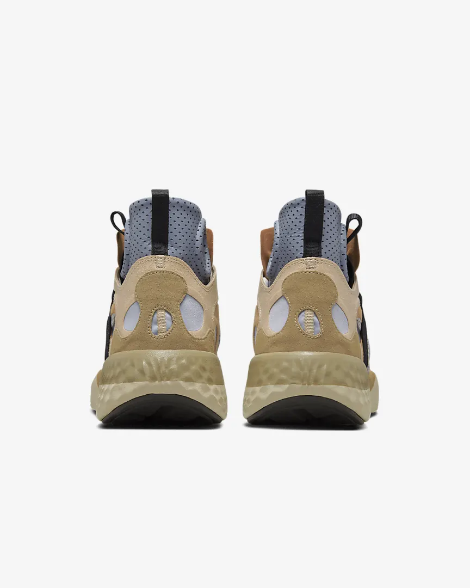
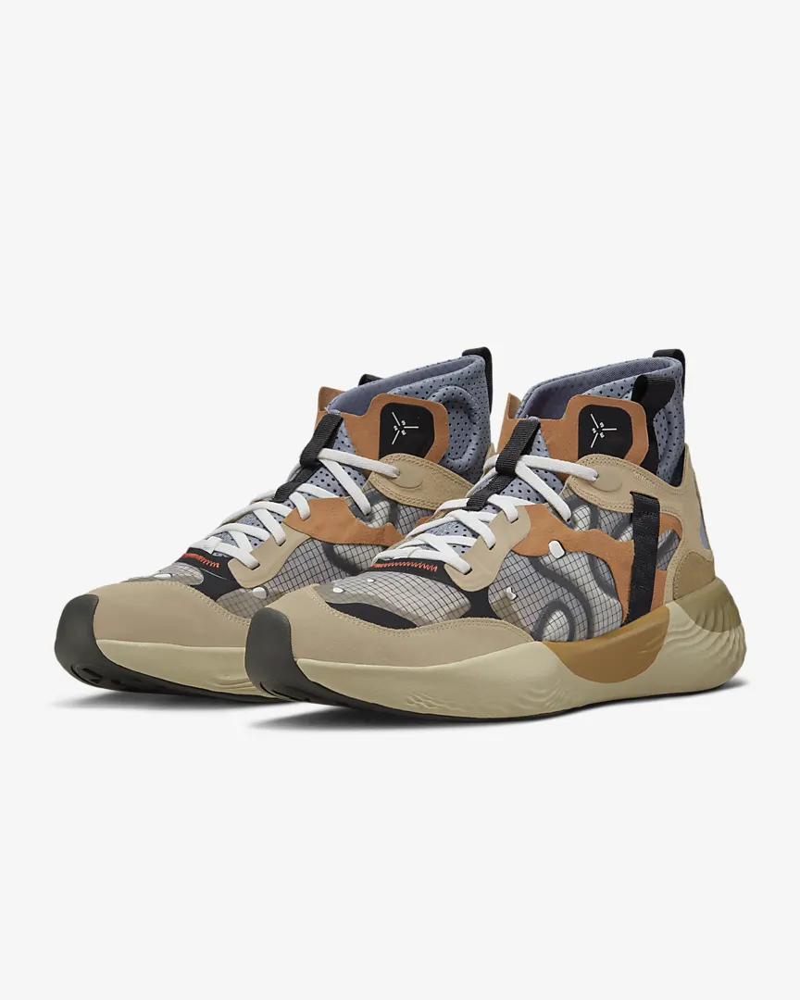

|

|

|
Combining high-end craft with high-tech features, these kicks are the embodiment of cool. Airy Ripstop and soft suede pair with a soft interior for a classic look and premium Jordan Brand comfort.
Combining high-end craft with high-tech features, these kicks are the embodiment of cool. Airy Ripstop and soft suede pair with a soft interior for a classic look and premium Jordan Brand comfort.
Tried and Tested Traction
The rubber outsole's abstract herringbone pattern, which references a basketball mainstay for traction, delivers support and lightweight flexibility.
Classic Meets Tech
From suede to Ripstop, the durable upper ticks all the boxes: lightweight, comfortable and ready for anywhere you go.
Colour Shown: Hemp/Dark Driftwood/Rattan/Sail
Style: DD9361-212
|